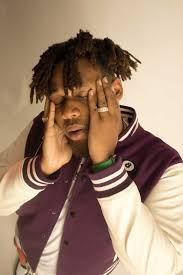

BENSON'S BIOGRAPHY
Daniel Etiese Benson (born 14 May 1997)
known professionally as Bnxn (pronounced as Benson) and formerly known as Buju
is a Nigerian Afro-fusion singer, songwriter and record producer.
EARLY LIFE
Daniel Etiese Benson was born in Lagos.
He hails from Akwa Ibom state.
He grew up in Gbagada with his family, relocating to Ogun State.
Benson was introduced to Afropop through artists such as 2Baba as a child, and credits Burna Boy as his inspiration for becoming a musical artist.
